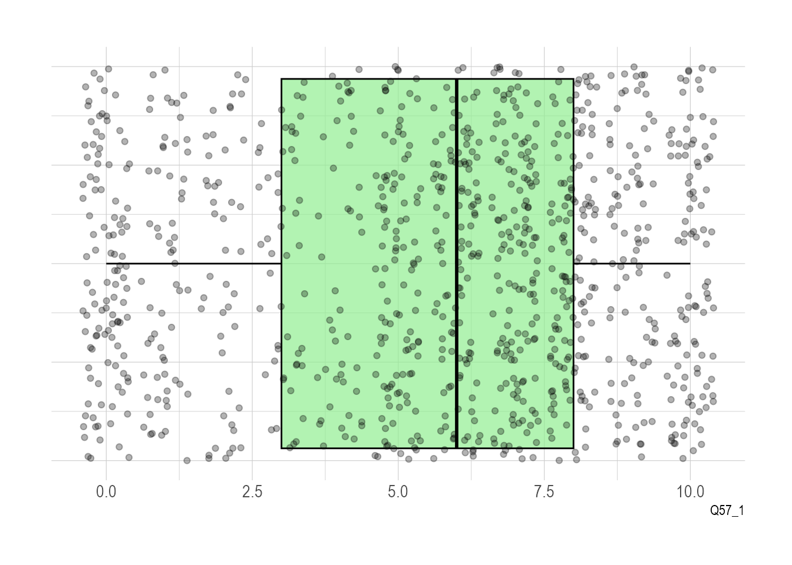

In the last chapter we explored some high level data about religion in the UK. This was a census sample, which usually refers to an attempt to get as comprehensive a sample as possible. But this is actually fairly unusual in practice. Depending on how complex a subject is, and how representative we want our data to be, it’s much more common to use selective sampling, that is survey responses at n=100 or n=1000 at a maximum. The advantage of a census sample is that you can explore how a wide range of other factors - particularly demographics - intersect with your question. And this can be really valuable in the study of religion, particularly as you will see as we go along that responses to some questions are more strongly correlated to things like economic status or educational attainment than they are to religious affiliation. It can be hard to tell if this is the case unless you have enough of a sample to break down into a number of different kinds of subsets. But census samples are complex and expensive to gather, so they’re quite rare in practice.
For this chapter, I’m going to walk you through a data set that a colleague (Charles Ogunbode) and I collected in 2021. Another problem with smaller, more selective samples is that researchers can often undersample minoritised ethnic groups. This is particularly the case with climate change research. Until the time we conducted this research, there had not been a single study investigating the specific experiences of people of colour in relation to climate change in the UK. Past researchers had been content to work with large samples, and assumed that if they had done 1000 surveys and 50 of these were completed by people of colour, they could “tick” the box. But 5% is actually well below levels of representation in the UK generally, and even more sharply the case for specific communities. And if we bear in mind that non-white respondents are (of course!) a highly heterogenous group, we’re even more behind in terms of collecting data that can improve our knowledge. Up until recently researchers just haven’t been paying close enough attention to catch the significant neglect of the empirical field that this represents.
While I’ve framed my comments above in terms of climate change research, it is also the case that, especially in diverse societies like the USA, Canada, the UK etc., paying attention to non-majority groups and people and communities of colour automatically draws in a strongly religious sample. This is highlighted in one recent study done in the UK, the “Black British Voices Report” in which the researchers observed that “84% of respondents described themselves as religious and/or spiritual”. My comments above in terms of controlling for other factors remains important here - these same researchers also note that “despire their significant important to the lives of Black Britons, only 7% of survey respondents reported that their religion was more defining of their identity than their race”.
We’ve decided to open up access to our data and I’m highlighting it in this book because it’s a unique opportunitiy to explore a dataset that emphasises diversity from the start, and by extension, provides some really interesting ways to use data science techniques to explore religion in the UK.
2.1 Loading in some data
# R Setup -----------------------------------------------------------------setwd("/Users/kidwellj/gits/hacking_religion_textbook/hacking_religion")library(here) |>suppressPackageStartupMessages()library(tidyverse) |>suppressPackageStartupMessages()# used for importing SPSS .sav fileslibrary(haven) |>suppressPackageStartupMessages()here::i_am("chapter_2.qmd")
here() starts at /Users/kidwellj/gits/hacking_religion_textbook/hacking_religion
The first thing to note here is that we’ve drawn in a different type of data file, this time from an .sav file, usully produced by the statistics software package SPSS. This uses a different R Library (I use haven for this). The upside is that in some cases where you have survey data with both a code and a value like “1” is eqivalent to “very much agree” this will preserve both in the R dataframe that is created. Now that you’ve loaded in data, you have a new R dataframe called “climate_experience_data” with a lot of columns with just under 1000 survey responses.
2.2 How can you ask about religion?
One of the challenges we faced when running this study is how to gather responsible data from surveys regarding religious identity. We’ll dive into this in depth as we do analysis and look at some of the agreements and conflicts in terms of respondent attribution. Just to set the stage, we used the following kinds of question to ask about religion and spirituality:
2.2.1 “What is your religion?”
Question 56 asks respondents simply, “What is your religion?” and then provides a range of possible answers. We included follow-up questions regarding denomination for respondents who indicated they were “Christian” or “Muslim”. For respondents who ticked “Christian” we asked, “What is your denomination?” nad for respondents who ticked “Muslim” we asked “Which of the following would you identify with?” and then left a range of possible options which could be ticked such as “Sunni,” “Shia,” “Sufi” etc.
This is one way of measuring religion, that is, to ask a person if they consider themselves formally affiliated with a particular group. This kind of question has some (serious) limitations, but we’ll get to that in a moment.
2.2.2 “How religious would you say you are?”
We also asked respondents (Q57): “Regardless of whether you belong to a particular religion, how religious would you say you are?” and then provided a slider from 0 (not religious at all) to 10 (very religious).
2.2.3 Participation in Worship
We included some classic indicators about how often respondents go to worship (Q58): Apart from weddings, funerals and other special occasions, how often do you attend religious services? and (Q59): “Q59 Apart from when you are at religious services, how often do you pray?”
More than once a week (1)
Once a week (2)
At least once a month (3)
Only on special holy days (4)
Never (5)
Each of these measures a particular kind of dimension, and it is interesting to note that sometimes there are stronger correlations between how often a person attends worship services (weekly versus once a year) and a particular view, than there is between their affiliation (if they are Christian or Pagan). We’ll do some exploratory work shortly to see how this is the case in our sample.
2.2.4 Spirituality
We also included a series of questions about spirituality in Q52 and used a slightly overlapping nature relatedness scale Q51.
You’ll find that many surveys will only use one of these forms of question and ignore the rest. I think this is a really bad idea as religious belonging, identity, and spirituality are far too complex to work off a single form of response. We can also test out how these different attributions relate to other demographic features, like interest in politics, economic attainment, etc.
So Who’s Religious?
As I’ve already hinted in the previous chapter, measuring religiosity is complicated. I suspect some readers may be wondering something like, “what’s the right question to ask?” here. Do we get the most accurate representation by asking people to self-report their religious affiliation? Or is it more accurate to ask individuals to report on how religious they are? Is it, perhaps, better to assume that the indirect query about practice, e.g. how frequently one attends services at a place of worship may be the most reliable proxy?
Highlight challenges of various approaches pointing to literature.
2.3 Exploring data around religious affiliation:
Let’s dive into the data and see how this all works out. We’ll start with the question 56 data, around religious affiliation:
There are few things we need to do here to get the data into initial proper shape. This might be called “cleaning” the data:
Because we imported this data from an SPSS .sav file format using the R haven() library, we need to start by adapting the data into a format that our visualation engine ggplot can handle (a dataframe).
Next we’ll rename the columns so these names are a bit more useful.
We need to omit non-responses so these don’t mess with the counting (these are NA in R)
If we pause at this point to view the data, you’ll see it’s basically just a long list of survey responses. What we need is a count of each unique response (or factor). This will take a few more steps:
First we generate new a dataframe with sums per category and
2
…sort in descending order
3
Then we add new column with percentages based on the sums you’ve just generated
That should give us a tidy table of results, which you can see if you view the contents of our new religious_affiliation_sums dataframe:
head(religious_affiliation_sums)
# A tibble: 6 x 3
response n perc
<fct> <int> <chr>
1 Christian 342 "33.9%"
2 Muslim 271 "26.9%"
3 No religion 108 "10.7%"
4 Hindu 72 " 7.1%"
5 Atheist 54 " 5.4%"
6 Spiritual but not religious 38 " 3.8%"
# make plotggplot(religious_affiliation_sums, aes(x = n, y = response)) +geom_col(colour ="white") +## add percentage labelsgeom_text(aes(label = perc),## make labels left-aligned and whitehjust =1, nudge_x =-.5, colour ="white", size=3)
I’ve added one feature to our chart that wasn’t in the bar charts in chapter 1, text labels with the actual value on each bar.
You may be thinking about the plots we’ve just finished in chapter 1 and wondering how they compare. Let’s use the same facet approach that we’ve just used to render this data in a subsetted way.
# First we need to add in data on ethnic self-identification from our respondents:df <-select(climate_experience_data, Q56, Q0)religious_affiliation_ethnicity <-as_tibble(as_factor(df))names(religious_affiliation_ethnicity) <-c("Religion", "Ethnicity")religious_affiliation_ethnicity_sums <- religious_affiliation_ethnicity %>%group_by(Ethnicity) %>% dplyr::count(Religion, sort =TRUE) %>% dplyr::mutate(Religion = forcats::fct_rev(forcats::fct_inorder(Religion)))plot1 <-ggplot(religious_affiliation_ethnicity_sums, aes(x = n, y = Religion)) +geom_col(colour ="white") +facet_wrap(~Ethnicity, scales="free_x")ggsave("chart.png", plot=plot1, width =8, height =10, units=c("in"))
2.4 Working With a Continum: Religiosity and Spirituality
So far we’ve just worked with bar plots, but there are a lot of other possible visualisations and types of data which demand them.
As I’ve mentioned above, on this survey we also asked respondents to tell us on by rating themselves on a scale of 0-10 with 0 being “not religious at all” and 10 being “very religious” in response to the question, “Regardless of whether you belong to a particular religion, how religious would you say you are?”
We’ll recycle some code from our previous import to bring in the Q57 data:
Note: we have removed sort = TRUE in the above statement as it will enforce sorting the data by quantities rather than the factor order. It wouldn’t really make sense to plot this chart in the order of response.
Now, let’s plot that data:
caption <-"Respondent Religiosity"ggplot(religiosity_sums, aes(x = response, y = n, color=response)) +1geom_col(colour ="white", aes(fill = response)) +## get rid of all elements except y axis labels + adjust plot margin2coord_flip() +theme(plot.margin =margin(rep(15, 4))) +labs(caption = caption)
1
We’ve added colors, because colours are fun.
2
Also new here is coord_flip to rotate the chart so we have bars going horizontally
Since we’re thinking about how things look just now, let’s play with themes for a minute. ggplot is a really powerful tool for visualising information, but it also has some quite nice features for making things look pretty.
If you’d like to take a proper deep dive on all this theme stuff, R-Charts has a great set of examples showing you how a number of different theme packages look in practice, “R-Charts on Themes”.
R has a number of built-in themes, but these are mostly driven by functional concerns, such as whether you might want to print your chart or have a less heavy look overall. So for example you might use theme_light() in the following way:
ggplot(religiosity_sums, aes(x = response, y = n, color=response)) +geom_col(colour ="white", aes(fill = response)) +## get rid of all elements except y axis labels + adjust plot margincoord_flip() +theme(plot.margin =margin(rep(15, 4))) +labs(caption = caption) +theme_light()
You can also use additional packages like ggthemes() or hrbrthemes() so for example we might want to try the pander theme which has it’s own special (and very cheerful) colour palette.
We’re going to come back to this chart, but let’s set it to one side for a moment and build up a visualisation of the spirituality scale data. The spirituality scale questions come from research by ___ and ___. These researchers developed a series of questions which they asked respondents in a survey. The advantage here is that you’re getting at the question of spirituality from a lot of different angles, and then you combine the scores from all the questions to get a mean “spirituality score”.
### Spirituality scale --------------------------------------------------------------# Calculate overall mean spirituality score based on six questions:climate_experience_data$Q52_score <-rowMeans(select(climate_experience_data, Q52a_1:Q52f_1))
Like we did in chapter 1, let’s start by exploring the data and get a bit of a sense of the character of the responses overall. One good place to start is to find out the mean response for our two continum questions:
# t_testing and means# Spirituality scale# JK note to self: need to fix stat_summary plot here# stat_summary(climate_experience_data$Q52_score)mean(climate_experience_data$Q52_score)
[1] 6.047454
# Q57 Regardless of whether you belong to a particular religion, how religious would you say you are?# 0-10, Not religious at all => Very religious; mean=5.58mean(climate_experience_data$Q57_1) # religiosity
[1] 5.581349
# Q58 Apart from weddings, funerals and other special occasions, how often do you attend religious services?# coded at 1-5, lower value = stronger mean=3.439484mean(climate_experience_data$Q58) # service attendance
[1] 3.439484
# Q59 Apart from when you are at religious services, how often do you pray?# coded at 1-5, lower = stronger mean=2.50496mean(climate_experience_data$Q59)
[1] 2.50496
Now let’s try out some visualisations:
## Q52 Spirituality data ------------------------q52_data <-select(climate_experience_data, Q52a_1:Q52f_1)# Data is at wide format, we need to make it 'tidy' or 'long'q52_data <- q52_data %>%gather(key="text", value="value") %>%# rename columnsmutate(text =gsub("Q52_", "",text, ignore.case =TRUE)) %>%mutate(value =round(as.numeric(value),0))
Warning: attributes are not identical across measure variables; they will be
dropped
# Change names of rows to question textq52_data <- q52_data %>%gather(key="text", value="value") %>%# rename columnsmutate(text =gsub("Q52a_1", "In terms of questions I have about my life, my spirituality answers...",text, ignore.case =TRUE)) %>%mutate(text =gsub("Q52b_1", "Growing spiritually is important...",text, ignore.case =TRUE)) %>%mutate(text =gsub("Q52c_1", "When I<e2><80><99>m faced with an important decision, spirituality plays a role...",text, ignore.case =TRUE)) %>%mutate(text =gsub("Q52d_1", "Spirituality is part of my life...",text, ignore.case =TRUE)) %>%mutate(text =gsub("Q52e_1", "When I think of things that help me grow and mature as a person, spirituality has an effect on my personal growth...",text, ignore.case =TRUE)) %>%mutate(text =gsub("Q52f_1", "My spiritual beliefs affect aspects of my life...",text, ignore.case =TRUE))# Plot# Used for gradient colour schemes, as with violin plotslibrary(viridis)
Loading required package: viridisLite
q52_plot <- q52_data %>%mutate(text =fct_reorder(text, value)) %>%# Reorder dataggplot( aes(x=text, y=value, fill=text, color=text)) +geom_boxplot() +scale_fill_viridis(discrete=TRUE, alpha=0.8) +geom_jitter(color="black", size=0.2, alpha=0.2) +theme_ipsum() +theme(legend.position="none", axis.text.y =element_text(size =8)) +coord_flip() +# This switch X and Y axis and allows to get the horizontal versionxlab("") +ylab("Spirituality scales") +scale_x_discrete(labels =function(x) str_wrap(x, width =45))# using gridExtra to specify explicit dimensions for printingq52_plot
ggsave("figures/q52_boxplot.png", width =20, height =10, units ="cm")
There’s an enhanced version of this plot we can use, called ggstatsplot() to get a different view:
# As an alternative trying ggstatsplot:library(rstantools)
This is rstantools version 2.3.1.1
library(ggstatsplot)
You can cite this package as:
Patil, I. (2021). Visualizations with statistical details: The 'ggstatsplot' approach.
Journal of Open Source Software, 6(61), 3167, doi:10.21105/joss.03167
q52_plot_alt <-ggbetweenstats(data = q52_data,x = text,y = value,outlier.tagging =TRUE,title ="Intrinsic Spirituality Scale Responses") +scale_x_discrete(labels =function(x) str_wrap(x, width =30)) +# Customizationstheme(# Change fonts in the plottext =element_text(family ="Helvetica", size =8, color ="black"),plot.title =element_text(family ="Abril Fatface", size =20,face ="bold",color ="#2a475e" ),# Statistical annotations below the main titleplot.subtitle =element_text(family ="Helvetica", size =12, face ="bold",color="#1b2838" ),plot.title.position ="plot", # slightly different from defaultaxis.text =element_text(size =10, color ="black"),axis.text.x =element_text(size =7),axis.title =element_text(size =12),axis.line =element_line(colour ="grey50"),panel.grid.minor =element_blank(),panel.grid.major.x =element_blank(),panel.grid =element_line(color ="#b4aea9"),panel.grid.major.y =element_line(linetype ="dashed"),panel.background =element_rect(fill ="#fbf9f4", color ="#fbf9f4"),plot.background =element_rect(fill ="#fbf9f4", color ="#fbf9f4") )
Scale for x is already present.
Adding another scale for x, which will replace the existing scale.
q52_plot_alt
ggsave("figures/q52_plot_alt.png", width =20, height =12, units ="cm")
One thing that might be interesting to test here is whether spirituality and religiosity are similar for our respondents.
`geom_smooth()` using method = 'gam' and formula = 'y ~ s(x, bs = "cs")'
# using http://sthda.com/english/wiki/ggplot2-scatter-plots-quick-start-guide-r-software-and-data-visualizationggplot(climate_experience_data, aes(x=Q52_score, y=Q57_1)) +labs(x="Spirituality Scale Score", y ="How Religious?") +geom_point(size=1, alpha=0.3) +stat_density_2d(aes(fill = ..level..), geom="polygon", alpha=0.3)+scale_fill_gradient(low="blue", high="red") +theme_minimal()
Warning: The dot-dot notation (`..level..`) was deprecated in ggplot2 3.4.0.
i Please use `after_stat(level)` instead.
Because the responses to these two questions, about spirituality and religiosity are on a continuum, we can also use them, like we did in previous charts, to subset other datasets. A simple way of doing this is to separate our respondents into “high,” “medium,” and “low” bins for the two questions. Rather than working with hard values, like assigning 0-3, 4-6 and 7-10 for low medium and high, we’ll work with the range of values that respondents actually chose. This is particularly appropriate as the median answer to these questions was not “5”. So we’ll use the statistical concept of standard deviation, which R can calculate almost magically for us, in the following way:
# Create low/med/high bins based on Mean and +1/-1 Standard Deviationclimate_experience_data <- climate_experience_data %>%mutate(Q52_bin =case_when( Q52_score >mean(Q52_score) +sd(Q52_score) ~"high", Q52_score <mean(Q52_score) -sd(Q52_score) ~"low",TRUE~"medium" ) %>%factor(levels =c("low", "medium", "high")) )## Q57 subsetting based on Religiosity --------------------------------------------------------------climate_experience_data <- climate_experience_data %>%mutate(Q57_bin =case_when( Q57_1 >mean(Q57_1) +sd(Q57_1) ~"high", Q57_1 <mean(Q57_1) -sd(Q57_1) ~"low",TRUE~"medium" ) %>%factor(levels =c("low", "medium", "high")) )
As in the previous chapter, it’s useful to explore multiple factors when possible. So I’d like us to take the data about political affiliation to visualise alongside our religion and spirituality data. this will help us to see where effects are more or less significant and give us a point of comparison.
## Q53 subsetting based on Political LR orientation --------------------------------------------------------------# Generate low/med/high bins based on Mean and SDclimate_experience_data <- climate_experience_data %>%mutate(Q53_bin =case_when( Q53_1 >mean(Q53_1) +sd(Q53_1) ~"high", Q53_1 <mean(Q53_1) -sd(Q53_1) ~"low",TRUE~"medium" ) %>%factor(levels =c("low", "medium", "high")) )
Now let’s use those bins to explore some of the responses about attitudes towards climate change:
# Faceted plot working with 3x3 griddf <-select(climate_experience_data, Q52_bin, Q53_bin, Q57_bin, Q58)names(df) <-c("Q52_bin", "Q53_bin", "Q57_bin", "response")facet_names <-c(`Q52_bin`="Spirituality", `Q53_bin`="Politics L/R", `Q57_bin`="Religiosity", `low`="low", `medium`="medium", `high`="high")facet_labeller <-function(variable,value){return(facet_names[value])}df$response <-factor(df$response, ordered =TRUE, levels =c("1", "2", "3", "4", "5"))df$response <-fct_recode(df$response, "More than once a week"="1", "Once a week"="2", "At least once a month"="3", "Only on special holy days"="4", "Never"="5")df %>%# we need to get the data including facet info in long format, so we use pivot_longer()pivot_longer(!response, names_to ="bin_name", values_to ="b") %>%# add counts for plot belowcount(response, bin_name, b) %>%group_by(bin_name,b) %>%mutate(perc=paste0(round(n*100/sum(n),1),"%")) %>%# run ggplotggplot(aes(x = n, y ="", fill = response)) +geom_col(position=position_fill(), aes(fill=response)) +geom_text(aes(label = perc), position =position_fill(vjust=.5), size=2) +scale_fill_brewer(palette ="Dark2", type ="qual") +scale_x_continuous(labels = scales::percent_format()) +facet_grid(vars(b), vars(bin_name), labeller=as_labeller(facet_names)) +labs(caption = caption, x ="", y ="") +guides(fill =guide_legend(title =NULL))

ggsave("figures/q58_faceted.png", width =30, height =10, units ="cm")